Signaux et capteurs
Ce chapitre sera débloqué en fin de séquence, au rythme de la classe. Le code de déblocage est transmis via le cahier de textes — il figure aussi en bas de ta fiche de cours.
Sommaire du chapitre
Physique-Chimie · 2nde · Thème 3 — Ondes et signaux
Signaux et capteurs
Thème 3 · Chapitre 2 — cours & exercices corrigés
01 Rappels
A · Les dipôles
Un dipôle est un composant électrique comportant deux bornes.
Il en existe deux types :
- Les dipôles générateurs qui produisent de l'énergie électrique pour alimenter les autres dipôles.
- Les dipôles récepteurs qui ne produisent pas d'énergie électrique mais qui la reçoivent pour la convertir (transformer) en une nouvelle forme d'énergie.
Chaque dipôle se représente sur un schéma par un symbole normalisé.
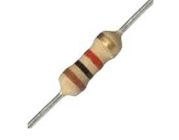
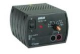
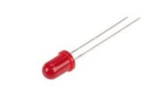
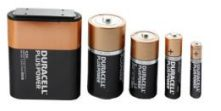
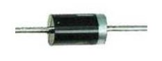
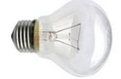
Pour chacun des six dipôles ci-dessus, indiquer s'il s'agit d'un générateur ou d'un récepteur.
Voir la correction
| Dipôle | Générateur ou récepteur ? |
|---|---|
| Pile | générateur |
| Générateur | générateur |
| Résistance | récepteur |
| LED ou DEL | récepteur |
| Diode | récepteur |
| Lampe | récepteur |
Seuls la pile et le générateur produisent de l'énergie électrique ; les quatre autres dipôles la reçoivent et la convertissent : en lumière pour la lampe et la LED, en chaleur pour la résistance.
B · Le circuit électrique
Pour que le courant électrique puisse circuler dans un circuit électrique, il faut :
- Que le circuit soit fermé. Un interrupteur permet d'ouvrir et de fermer le circuit.
- Que le circuit comporte un générateur qui fournit une tension électrique. (Sans tension, pas de courant)
- Que le circuit soit constitué d'une suite ininterrompue de conducteurs électriques. (La plupart du temps des fils constitués de métaux : cuivre, fer, or, zinc etc.)
- Le schéma est tracé au crayon de papier et à la règle.
- Le schéma doit avoir une allure rectangulaire.
- Il ne doit pas y avoir de dipôles dans les coins du schéma.
- On utilise les symboles décrits précédemment.
- On a le droit de dessiner les dipôles verticalement.
Un montage est dit en boucle simple lorsque les dipôles de ce circuit sont les uns à la suite des autres pour former une boucle. On dit aussi que les éléments sont en série.
Un montage qui comporte des dérivations, comporte plusieurs boucles.
- Légender le schéma.
- Indiquer le sens du courant.
- Montage en série ou montage en dérivation ?
Voir la correction
Le courant ne peut circuler ni dans la branche comportant un interrupteur, ni dans celle comportant une diode bloquante.
Une fois ces deux branches écartées, le courant ne parcourt qu'une seule boucle : montage en série.
C · Les grandeurs en électricité : U et I
L'intensité du courant électrique (I)
L'intensité du courant électrique peut être comparée au débit d'une rivière. Elle correspond à la quantité et la vitesse du courant électrique qui circule en un point donné du circuit.
L'intensité du courant est toujours notée I, elle a pour unité l'ampère, de symbole A.
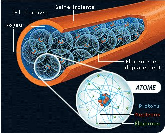
La tension électrique (U)
Un potentiel électrique V est une grandeur définissant l'état électrique d'un point de l'espace. Son unité est le volt, de symbole V.
Une tension électrique U est une différence de potentiels entre deux points de l'espace. Son unité est donc aussi le volt. On écrit :
UAB = VA − VB
UAB = −UBA
D · Les instruments de mesure
Un multimètre permet de mesurer plusieurs grandeurs électriques :
- en mode ampèremètre, il se branche en série et permet de mesurer l'intensité du courant circulant ;
- en mode voltmètre, il se branche en dérivation et permet de mesurer la tension entre deux points ;
- en mode ohmmètre, il se branche aux bornes d'un composant ou d'un circuit pour en mesurer sa résistance.
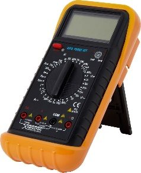
Lorsque l'on veut visualiser l'évolution du signal au cours du temps, on utilise un oscilloscope ou une interface d'acquisition et un logiciel informatique.
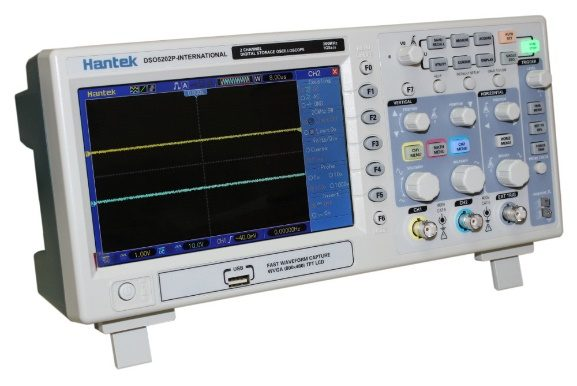
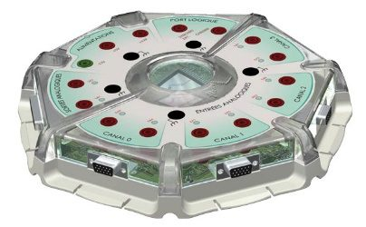
02 La loi des nœuds
Dans un circuit en série, l'intensité du courant est la même dans tous les dipôles et elle ne dépend pas de l'ordre des dipôles.
Un nœud est un point d'intersection de plusieurs branches dans un circuit.
Au niveau d'un nœud, la somme des intensités des courants sortants est égale à la somme des intensités des courants entrants.
Remarque : On la nomme aussi 1re loi de Kirchhoff, elle permet de retrouver la loi d'additivité des courants.
Exprimer la loi des nœuds au nœud A et B.
Voir la correction
Au nœud A, les courants entrants sont I1 et I2, les courants sortants sont I3 et I4 ; ainsi :
I1 + I2 = I3 + I4
Au nœud B, les courants entrants sont I3 et I6, le courant sortant est I5 ; ainsi :
I3 + I6 = I5
Attention au sens des flèches : I5 repart du nœud B, il passe donc de l'autre côté du signe égal.
03 La loi des mailles
Une maille est une portion fermée de circuit électrique. La présence de nœuds implique celle de plusieurs mailles.
Remarque : Aux bornes de deux branches en dérivation, soit entre deux mêmes nœuds, la tension électrique est identique.
En parcourant l'intégralité d'une maille, la somme des tensions rencontrées, prises positives ou négatives selon leur sens de fléchage, est nulle.
Remarque : On la nomme aussi 2e loi de Kirchhoff, elle permet de retrouver la loi d'additivité des tensions.
La loi des mailles (application)
- Exprimer la loi des mailles dans ce circuit.
- Retrouver la tension aux bornes de la LED.
Données : UPN = 4,5 V ; UPA = 1,2 V ; UCN = 0,4 V ; UBC = 1,1 V
Voir la correction
UPA − UPN + UCN + UBC + UAB = 0
UAB = UPN − UPA − UCN − UBC
UAB = 4,5 − 1,2 − 0,4 − 1,1
UAB = 1,8 V
- Placer les flèches tension.
- Retrouver la tension aux bornes de la pile.
Données : UD = 4,00 V ; UR1 = 1,25 V ; UR2 = 0,75 V
Voir la correction
UP − UD − UR1 − UR2 = 0
UP = UD + UR1 + UR2
UP = 4,00 + 1,25 + 0,75
UP = 6,00 V
04 Caractéristique tension-courant d'un dipôle
Il existe une relation particulière entre l'intensité du courant qui parcourt un dipôle et la tension à ses bornes, appelée sa caractéristique.
Remarque : Cette relation est caractérisée par l'impédance du dipôle.
La courbe de cette caractéristique, U = f(I) ou I = g(U), représente les différents points de fonctionnement (U ; I) du dipôle.
Donner deux autres points de fonctionnement de ce résistor.
Voir la correction
On lit deux des points relevés sur la caractéristique, notés (U ; I), avec U en volts et I en ampères :
(8 ; 0,08) (2 ; 0,02)
05 La loi d'Ohm
La valeur de la grandeur résistance est donnée en ohm (Ω), elle est notée R. La résistance est également un dipôle récepteur qui transforme l'énergie électrique en chaleur, on dit qu'elle dissipe l'énergie électrique.
Il y a une relation de proportionnalité entre la tension U aux bornes d'une résistance et l'intensité I du courant qui la traverse. Le coefficient directeur est la résistance R.
R résistance · Ω
I intensité · A
Retrouver la valeur de la résistance associée à cette caractéristique.
Voir la correction
U = R × I
U = R × I ⟺ f(x) = a × x
On cherche deux points de fonctionnement pour retrouver le coefficient directeur de la droite.
(3 ; 0,020) ⟺ (yA ; xA)
(9 ; 0,060) ⟺ (yB ; xB)
R = a = yB − yAxB − xA = 9 − 30,060 − 0,020
R = 150 Ω
Quelle est la tension de R1 ?
Voir la correction
I = 500 mA = 0,5 A R1 = 10 Ω
U = R × I
U = 10 × 0,5 = 5 V
06 Les capteurs électriques
A · Généralités
Un capteur est un dispositif capable de convertir une grandeur physique (grandeur d'entrée) en une grandeur électrique (grandeur de sortie) qui la plupart du temps est une tension électrique, une intensité ou une résistance.
La grandeur de sortie d'un capteur peut être analogique, numérique ou encore logique. Un instrument de mesure est constitué d'un ou plusieurs capteurs, mais aussi d'un afficheur et/ou un système de stockage des données, le rendant ainsi autonome.
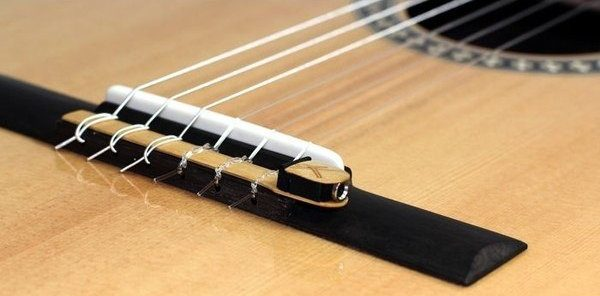
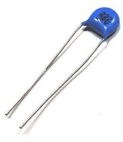
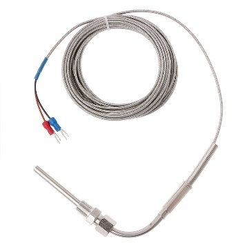
La courbe d'étalonnage permet de déterminer la valeur d'entrée reçue par le capteur à partir de la valeur de sortie qu'il fournit.
Par exemple, si la température extérieure est de 40 °C alors la résistance mesurée aux bornes de la thermistance sera d'environ 500 Ω.
B · Microcontrôleurs
Un microcontrôleur est un circuit intégré programmable rassemblant les éléments essentiels d'un système informatisé : processeur, mémoires, périphériques, interfaces d'entrées/sorties.
Des capteurs peuvent être associés à un microcontrôleur pour former une chaîne de mesure. Cette dernière peut permettre de commander des actionneurs.
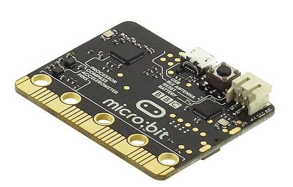
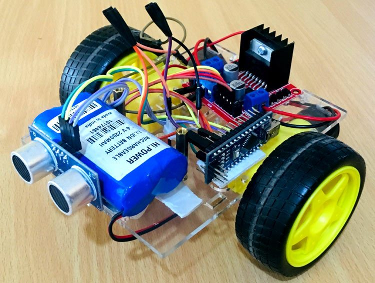
S'exercer en vidéo :
✓ Pour le DS, je sais :
Proposition — liste tirée du programme de seconde, en attente de validation par M. Van Hoorde.
M. Van HoordeLycée général Isaac de l'Étoile · Poitiers